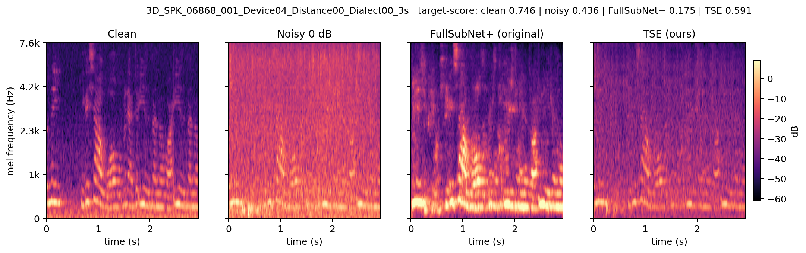
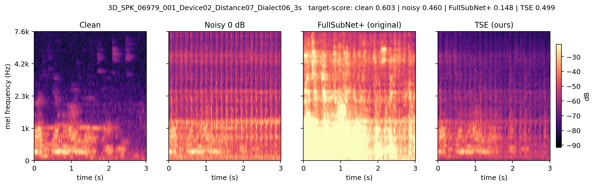
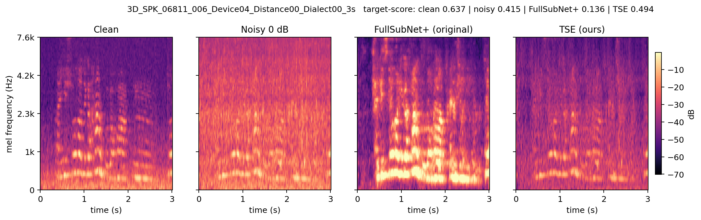
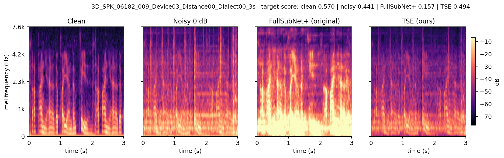
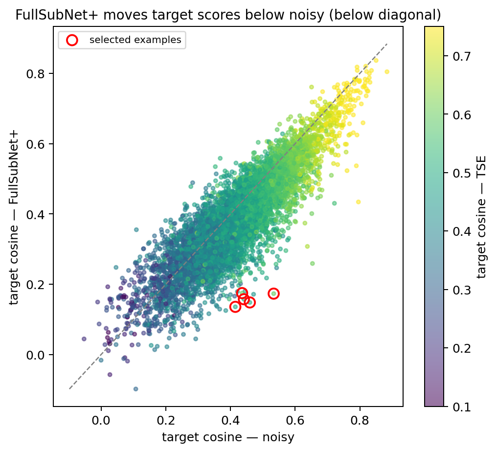

通用降噪 vs 注册条件化 TSE：声纹特征四路对比
中国移动鸿鹄实习 · 跨设备噪声鲁棒声纹识别 ·
使用当年那两次实验的原始 wav / 原始 embedding / 原始打分，没有重训、没有重跑降噪模型。
Clean（参考上界）
5.293%
EER · 1.378M trials
Noisy 0 dB
8.391%
EER · 未增强
FullSubNet+（原方法）
10.113%
EER · 反而变差
TSE（现有方法）
4.892%
EER · 低于 clean
1. 全局结果（同一注册、同一 trial 协议）
| 条件 | EER (%) | minDCF | target 均值 | nontarget 均值 | target−nontarget | d′ | cos 到 clean embedding |
|---|---|---|---|---|---|---|---|
| Clean（上界参考） | 5.2928 | — | 0.4903 | 0.0597 | 0.4307 | 3.322 | 1.0000 |
| Noisy 0 dB（未增强） | 8.3912 | 0.6283 | 0.4220 | 0.0513 | 0.3708 | 2.752 | 0.8202 |
| FullSubNet+（原方法） | 10.1132 | 0.7058 | 0.3905 | 0.0583 | 0.3322 | 2.544 | 0.7138 |
| TSE（现有方法） | 4.8921 | 0.5145 | 0.4713 | 0.0539 | 0.4175 | 3.416 | 0.8163 |
EER 越低越好；target/nontarget 为官方 1,378,206 条 trial 的原始余弦分数；cos 到 clean 是同一句在 clean 与各条件下的 ERes2Net embedding 余弦。
2. 逐条样本（可试听）
试听说明：原 FullSubNet+ 的推理代码把输出峰值归一化到 0.8，响度比 clean/TSE 高很多，直接试听会被音量误导。
本页播放器使用
wav_listen/ 中的 等响度副本（统一到 −23 dBFS RMS，峰值限幅 0.95）；wav/ 中保留了原始文件。
样本 1 · 3D_SPK_06975_005_Device03_Distance03_Dialect04_3s
Clean 0.662
Noisy 0.534
FullSubNet+ 0.173
TSE 0.593
数字 = 与 clean 注册语音的余弦相似度（越高越好）
相对 Noisy：ΔSI-SDR 原 +4.23 dB / TSE +3.44 dB · ΔSNR 原 +2.36 / TSE +1.28 dB · ΔPESQ 原 +0.119 / TSE +0.095 · ΔSTOI 原 +0.182 / TSE +0.107


样本 2 · 3D_SPK_06868_001_Device04_Distance00_Dialect00_3s
Clean 0.746
Noisy 0.436
FullSubNet+ 0.175
TSE 0.591
数字 = 与 clean 注册语音的余弦相似度（越高越好）
相对 Noisy：ΔSI-SDR 原 +5.12 dB / TSE +3.55 dB · ΔSNR 原 +10.13 / TSE +4.82 dB · ΔPESQ 原 +0.250 / TSE +0.087 · ΔSTOI 原 +0.088 / TSE +0.022

样本 3 · 3D_SPK_06979_001_Device02_Distance07_Dialect06_3s
Clean 0.603
Noisy 0.460
FullSubNet+ 0.148
TSE 0.499
数字 = 与 clean 注册语音的余弦相似度（越高越好）
相对 Noisy：ΔSI-SDR 原 +4.10 dB / TSE +3.94 dB · ΔSNR 原 +21.79 / TSE +7.63 dB · ΔPESQ 原 +0.176 / TSE +0.155 · ΔSTOI 原 +0.131 / TSE +0.068

样本 4 · 3D_SPK_06811_006_Device04_Distance00_Dialect00_3s
Clean 0.637
Noisy 0.415
FullSubNet+ 0.136
TSE 0.494
数字 = 与 clean 注册语音的余弦相似度（越高越好）
相对 Noisy：ΔSI-SDR 原 +2.92 dB / TSE +2.86 dB · ΔSNR 原 +17.41 / TSE +5.74 dB · ΔPESQ 原 +0.088 / TSE +0.176 · ΔSTOI 原 +0.059 / TSE +0.069

样本 5 · 3D_SPK_06182_009_Device03_Distance00_Dialect00_3s
Clean 0.570
Noisy 0.441
FullSubNet+ 0.157
TSE 0.494
数字 = 与 clean 注册语音的余弦相似度（越高越好）
相对 Noisy：ΔSI-SDR 原 +3.77 dB / TSE +1.66 dB · ΔSNR 原 +4.64 / TSE +2.52 dB · ΔPESQ 原 +0.180 / TSE +0.085 · ΔSTOI 原 +0.212 / TSE +0.100

3. 信号级 / 感知级指标（120 条随机样本）
3.1 绝对值（clean 作为参考）
| 条件 | SI-SDR (dB) | VAD 分段 SNR (dB) | PESQ-WB | STOI |
|---|---|---|---|---|
| Clean（参考） | —（参考） | —（参考） | 4.644 | 1.000 |
| Noisy 0 dB | −0.52 | 5.03 | 1.305 | 0.654 |
| FullSubNet+（原） | 8.07 | 20.69 | 1.889 | 0.750 |
| TSE（现有） | 7.09 | 13.43 | 1.958 | 0.739 |
PESQ/STOI 是参考型指标：clean-vs-clean 是上限（PESQ 4.644、STOI 1.000）。SI-SDR/SNR 的 clean 是参考信号本身，没有有限值，所以标“参考”。
为什么 PESQ 离 clean 这么远？ PESQ 是全参考指标，4.644 只对“和 clean 完全相同”的信号成立，而且它不是百分比。用同一批实际噪声残差扫输入 SNR（20 条测试语音）：
实际 noisy 的平均输入 SNR = 0.33 dB，PESQ 1.333，和 0 dB 扫描点 1.323 几乎逐位吻合——说明计算没问题，0 dB 下 PESQ ~1.3 就是这个量级。增强后 ~1.9 已经是从 0 dB 往 5–7 dB 质量走了一大步，但不能指望达到 4.6。
| 输入 SNR | 20 dB | 10 dB | 5 dB | 0 dB | −5 dB | Clean |
|---|---|---|---|---|---|---|
| PESQ-WB | 3.18 | 2.15 | 1.69 | 1.32 | 1.19 | 4.644 |
| STOI | 0.925 | 0.832 | 0.762 | 0.660 | 0.593 | 1.000 |

3.2 相对 Noisy 的提升
| 条件 | SI-SDRi (dB) | SNR 提升 (dB) | ΔPESQ | ΔSTOI |
|---|---|---|---|---|
| FullSubNet+（原） | +8.59 | +15.67 | +0.584 | +0.096 |
| TSE（现有） | +7.62 | +8.40 | +0.653 | +0.085 |
提升都是相对 Noisy 的配对差值；VAD 分段 SNR 用 clean 能量定义噪声帧/语音帧，取同一信号内语音帧功率与噪声帧功率之比；PESQ-WB 用官方
pesq 0.0.4，STOI 用 pystoi 0.4.1，均为 16 kHz。
三个 SNR 不是一回事：你最初设置的 0 / −5 dB 是输入混合 SNR；实测全局 SNR 为 0.16 / −4.53 dB。SI-SDR 对带噪数据 ≈ 输入 SNR（−0.52 / −5.52 dB），对增强后是尺度不变的全参考失真比。表里的“SNR”是VAD 分段 SNR（语音帧功率/噪声帧功率）：0 dB 数据算出 5.03 dB、−5 dB 数据算出 3.06 dB，绝对值本来就不等于 0 / −5 dB；+15.67 dB 是 VAD-SNRi，不是输出 SNR，不能直接加到 0 dB 上。
- 原方法在 SI-SDR、SNR、STOI 三项上更好（SI-SDRi +8.59 vs +7.62 dB；SNR +15.67 vs +8.40 dB；STOI 0.750 vs 0.739），PESQ 略低于 TSE（1.889 vs 1.958）。
- 但 EER 是 10.11% vs 4.89%：标准增强指标更好的一项，声纹反而更差。PESQ/STOI 衡量的是质量/可懂度，不是说话人身份。
- 逐句改善比例：原方法 PESQ 85.8%、STOI 87.5%、SI-SDR 95.8%、SNR 99.2%；TSE 分别为 99.2%、95.0%、96.7%、95.0%。TSE 在 PESQ 上更稳定，但均值上原方法在 SI-SDR/SNR/STOI 更高。

4. 为什么会坏：三条证据
一句话：原 FullSubNet+ 让波形更接近 clean（SI-SDR 最高），但把 ERes2Net 的说话人 embedding 推得离 clean 更远，
同时抹掉对声纹关键的高频/精细谱结构；TSE 的波形 SI-SDR 略低，但 embedding 留在说话人流形上，所以 EER 反而最好。
证据 A：波形更干净 ≠ 声纹更准
- 120 条随机测试语音上，原方法 SI-SDR +8.07 dB（SI-SDRi +8.59）、VAD 分段 SNR 20.69 dB（提升 +15.67）、STOI 0.750（Δ +0.096），三项都高于 TSE（+7.09 / +7.62、13.43 / +8.40、0.739 / +0.085）；PESQ 略低（1.889 vs 1.958）。
- 但同一批语音的 EER：原方法 10.11%，TSE 4.89%。SI-SDR/SNR/STOI 与 EER 方向相反，说明“降噪/可懂度目标”与“声纹目标”不是同一个目标。
证据 B：原方法把 embedding 推离 clean
- 同一句 clean vs 各条件的 embedding 余弦：Noisy 0.820，原方法 0.714，TSE 0.816。原方法比“完全不处理”还要远。
- target 分数均值：Noisy 0.422 → 原方法 0.391；target−nontarget gap：0.371 → 0.332；d′：2.75 → 2.54。
- 在 8507 条测试语音中，70.7% 的语句被原方法拉低 target 分数；TSE 相对原方法恢复了 91.7% 的语句。
- TSE 的 cos 到 clean 只与 Noisy 相当（0.816 vs 0.820），但 cos 到注册语音更高（0.471 vs 0.422）。它不是简单复刻 clean，而是把测试语音往“注册的这个人”方向拉——这正是注册条件化的作用。
- 频谱形状畸变（shape RMSE）与 embedding 漂移的相关系数为 −0.54（360 个“语句×条件”点）；SI-SDR 与漂移的相关系数只有 +0.13。坏在谱形状，不在残余噪声。
证据 C：原方法在频谱上做了什么
| 条件 | low 20–500 Hz | mid 0.5–2 kHz | high 2–7.6 kHz | 谱倾斜 | RMS 增益 | SI-SDR | shape RMSE | 平均 dB 差 |
|---|---|---|---|---|---|---|---|---|
| Clean | 0.692 | 0.281 | 0.027 | −25.1 | −33.5 | — | — | — |
| Noisy 0 dB | 0.549 | 0.285 | 0.166 | −18.9 | +2.6 | −0.52 | 3.97 | +1.35 |
| FullSubNet+（原） | 0.682 | 0.300 | 0.018 | −28.2 | +19.7 | +8.07 | 7.19 | +15.4 |
| TSE（现有） | 0.600 | 0.364 | 0.036 | −22.2 | −4.4 | +7.09 | 3.89 | −4.29 |
120 条随机测试语音的平均值。low/mid/high 是该频带能量占比；谱倾斜越负=高频衰减越强；shape RMSE 是去掉整体偏移后的 log-mel 谱形均方根误差，越小越接近 clean。
- 原方法把 high 频带能量占比从 Noisy 的 0.166 压到 0.018（比 clean 的 0.027 还低），谱倾斜从 −18.9 变到 −28.2，即过度压制高频；同时 RMS 增益 +19.7 dB（峰值归一化到 0.8），平均 log-mel 比 clean 高 15.4 dB。
- TSE 的 high 占比 0.036、谱倾斜 −22.2、shape RMSE 3.89，都更接近 clean/Noisy；它没有把高频语音细节一起压掉。
- 原方法的 shape RMSE 7.19 dB 约为 TSE 的 1.85 倍。声纹模型吃的正是这种精细谱包络；谱形被改，embedding 就会漂。
根因：目标函数与信息条件错位
- FullSubNet+ 是无注册条件的通用降噪，训练目标是 cIRM/信号重建，训练分布是 DNS 类数据。它不知道“要保留谁”，在跨设备中文语音 + 强低频噪声上会把目标语音的高频细节也当成噪声压掉，并引入低频偏置/峰值归一化伪影。它优化的是“像 clean”，不是“像这个人”。
- TSE 用注册语音的声纹 embedding 经 FiLM 注入 FullSubNet+，只提取注册说话人；训练里还有说话人保持损失（增强前后 embedding 余弦对齐）和难负原型抑制损失。它优化的是“增强后仍像注册的这个人”，所以能在降噪的同时把 embedding 留在说话人流形上。
- 标准增强指标 ≠ 声纹指标：SI-SDR/SNR/PESQ/STOI 衡量信号保真或可懂度；原方法在 SI-SDR/SNR/STOI 上更好，却把 embedding 推得更远。声纹系统需要的是身份判别性，不是波形相似度。
- 注意口径：这里的 TSE 是 oracle 口径（用真实说话人的注册语音做条件），对应交付主表；claim 口径（冒认句用声称者注册条件）存在条件信息泄漏，报告 §5 已单列，不能把本页的 4.89% 直接外推到真实部署。
5. 全局图



6. 文件与复现
wav/：5 条样本 × clean / noisy / FullSubNet+ / TSE + 注册参考，原始响度。wav_listen/：上面的等响度试听副本（−23 dBFS RMS）。figs/：时频图、差异图、分数分布、embedding 漂移、PCA、频带差、汇总图。data/summary.json：全局指标与阈值；data/per_utt_scores.csv：8507 条逐句分数与漂移；data/audio_features.csv：120 条随机样本的音频级特征；data/intrusive_metrics.csv：120 条样本的 SI-SDR/SNR/PESQ/STOI 逐句结果；data/pesq_snr_sweep.csv：PESQ/STOI 随输入 SNR 的扫描；data/selected_embeddings.npz：5 条样本的 512 维 embedding。- 原方法产物：
AI/8.17/models/best_model.tar→sv-ecapa/data/data_for_test/denoised/noise_0db/enhanced_0194/；embeddingexp/clean_bench/denoised_noise_0db/eres2net/embeddings_3s；官方 EER10.1132%。 - 现有方法产物：
AI/8.27/exp/tse_v3_ns05duraug_r5/checkpoint_best.tar→enhanced_official/noise_0db/；embeddingAI/8.28/final_eval_r5/r5_eres_noise_0db_3s；官方 EER4.8920%。 - 复现脚本：
sv_analyze.py（分数/漂移/选样）、sv_figs.py（wav/图）、sv_audio_features.py（120 条频谱统计）、sv_intrusive_metrics.py（SI-SDR/SNR/PESQ/STOI）、pesq_snr_sweep.py（PESQ/STOI vs SNR），均在服务器AI/10.17/。
所有分数与官方
result.metrics 对账：clean 5.2928 / noisy 8.3911 / FullSubNet+ 10.1132 / TSE 4.8920。重新抽取 embedding 与落盘 embedding 的余弦为 0.96–0.997，确认 wav 与 embedding 是同一批。